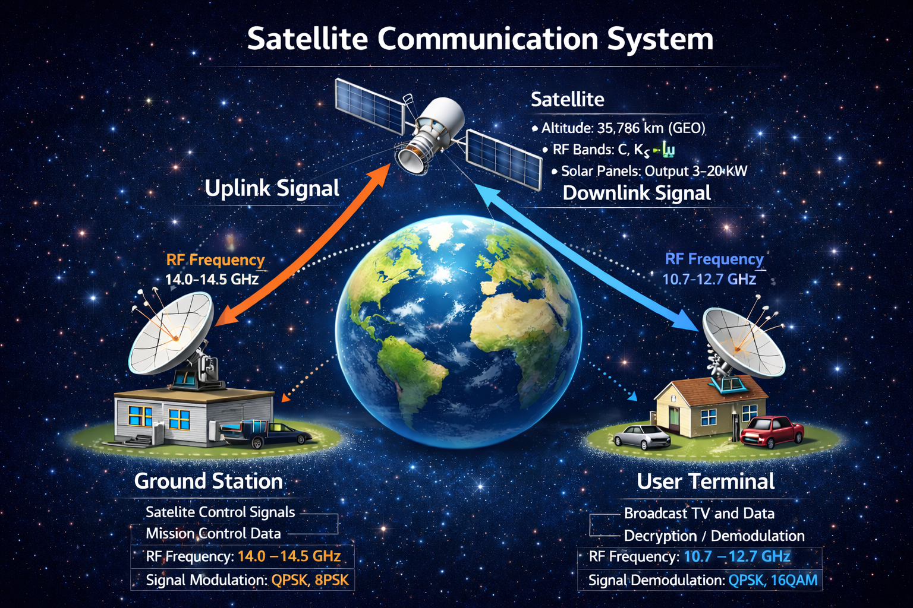

Satellite Systems
A satellite is an artificial spacecraft placed into orbit around Earth or another celestial body. Satellites are used for communication, navigation, Earth observation, meteorology, scientific research and defense applications. Modern satellites form the backbone of global telecommunications, navigation systems and environmental monitoring.
What is a Satellite?
A satellite remains in orbit because its forward velocity balances the gravitational pull of Earth. This condition is known as orbital motion. For a circular orbit, the required orbital velocity is approximately 7.8 km/s in Low Earth Orbit.
Satellites consist of two major parts:
- Payload: Mission equipment such as communication transponders, cameras, sensors or scientific instruments.
- Bus (Satellite Platform): Support systems including power supply, attitude control, propulsion system, thermal control and communication subsystems.
Satellite Communication System

Figure: Basic architecture of a satellite communication system showing uplink and downlink signal paths.
The figure above illustrates a simplified satellite communication system. Signals transmitted from a ground station are sent to the satellite in an uplink frequency band. The satellite receives, amplifies and processes the signal using onboard transponders, then retransmits it back to Earth in a different downlink frequency band to avoid interference.Typical Technical Parameters
- Orbit: Geostationary Earth Orbit (GEO) at 35,786 km altitude
- Uplink Frequency: 14.0 – 14.5 GHz (Ku Band)
- Downlink Frequency: 10.7 – 12.7 GHz (Ku Band)
- Signal Modulation: QPSK, 8PSK, 16QAM
- Satellite Power: Solar arrays producing 3–20 kW
- Ground Antenna: High-gain parabolic dish antennas
Satellite communication enables long-distance data transmission for television broadcasting, internet connectivity, military communication, and disaster management systems.
---Types of Satellite Orbits
- Low Earth Orbit (LEO) – 160 km to 2,000 km altitude. Orbital period: approximately 90–120 minutes. Commonly used for Earth observation, imaging satellites and the International Space Station.
- Medium Earth Orbit (MEO) – 2,000 km to 35,786 km altitude. Used mainly by navigation systems such as GPS, GLONASS, Galileo and NavIC.
- Geostationary Earth Orbit (GEO) – 35,786 km above the equator. Satellites appear stationary relative to Earth, making them ideal for communication and weather monitoring satellites.
Orbital Regions Around Earth

The diagram above illustrates the three primary orbital regimes around Earth: Low Earth Orbit (LEO), Medium Earth Orbit (MEO) and Geostationary Earth Orbit (GEO). Each orbital region provides different coverage, communication latency and revisit time depending on mission requirements.
---Key Orbital Characteristics
- Inclination: The angle between the orbital plane and the Earth's equatorial plane. Inclination determines which regions of Earth the satellite can observe.
- Eccentricity: Defines how circular or elliptical an orbit is. An eccentricity of 0 corresponds to a perfectly circular orbit.
- Polar Orbit: A satellite passes over both poles during each orbit, allowing global coverage as Earth rotates beneath it.
- Sun-Synchronous Orbit: A special polar orbit where the satellite passes over the same location at the same local solar time, ensuring consistent illumination for imaging satellites.
Major Satellite Applications
- Global communication networks
- Weather forecasting and climate monitoring
- Navigation systems (GPS, GLONASS, Galileo, NavIC)
- Earth observation and remote sensing
- Disaster monitoring and environmental studies
- Scientific research and deep space missions